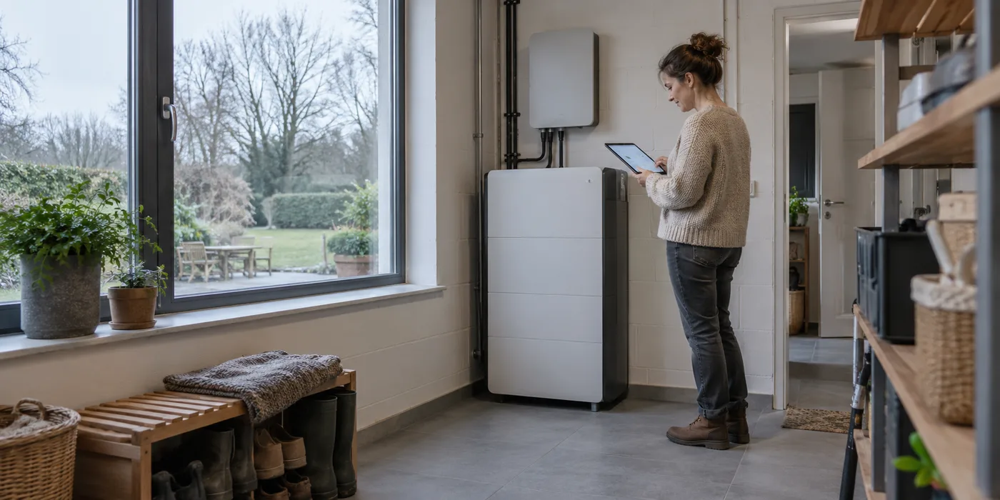
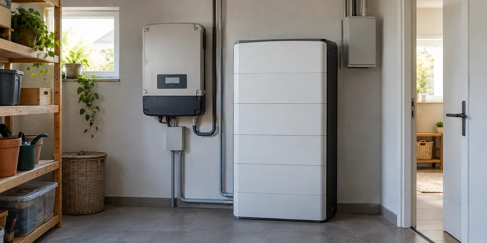

Je dak winterklaar laten nakijken: wat vraag je aan de dakwerker?
In oktober kijk je anders naar je dak dan op een droge zomerdag.
Lees de gidsDuidelijke uitleg over dakwerken, zonnepanelen en thuisbatterijen. Van je eerste vragen tot een goed voorbereide installatie.
30 artikels
In oktober kijk je anders naar je dak dan op een droge zomerdag.
Lees de gidsJe dak lijkt bruikbaar en zonnepanelen staan op je verlanglijst.
Lees de gidsJe jaarverbruik is een beginpunt, maar vertelt niet wanneer je stroom nodig hebt.
Lees de gidsEen goedkoper totaalbedrag vertelt weinig als de ene offerte alleen dakpannen bevat en de andere ook onderdak, isolatie en goten.
Lees de gidsTwee voorstellen kunnen dezelfde panelen tonen en toch een andere besparing beloven.
Lees de gidsTwee thuisbatterijen kunnen allebei een lange garantie noemen, terwijl de voorwaarden anders zijn.
Lees de gidsVocht onder het dak vraagt eerst een goede diagnose.
Lees de gidsBij een defecte of verouderde omvormer ligt een snelle vervanging voor de hand.
Lees de gidsEen slim aangestuurde batterij kan naast hardware ook software en diensten bevatten.
Lees de gidsJe wilt eerst het hoofdgebouw aanpakken en later de aanbouw.
Lees de gidsEen app met een mooie productiegrafiek is handig, maar een losse screenshot vertelt weinig.
Lees de gidsEen thuisbatterij levert niet automatisch stroom tijdens een netonderbreking.
Lees de gidsEen dakraam kan nog goed openen en toch een apart aandachtspunt zijn bij nieuwe isolatie.
Lees de gidsAls muren, dak of technische ruimte toch open zijn, kun je toekomstige zonnepanelen meenemen in het overleg.
Lees de gids
Een batterij die op zonnige dagen vaak vol raakt, werkt in donkere maanden onder andere omstandigheden.
Lees de gidsBij een oud leien- of golfplatendak is de materiaalnaam niet genoeg om de renovatie te plannen.
Lees de gidsEen legplan dat elk beschikbaar stukje dak vult, ziet er efficiënt uit.
Lees de gids
Je zonnepanelen werken al en je wilt opslag toevoegen.
Lees de gidsEen foto van water op een plat dak roept snel vragen op.
Lees de gidsJe panelen produceren stroom en de installateur vertrekt.
Lees de gidsEen batterij van een bepaalde capaciteit kan niet elke gewenste belasting tegelijk leveren.
Lees de gidsWanneer het dak vernieuwd wordt, zijn zonnepanelen geen losse decoratie die je even opzijzet.
Lees de gidsBij een woningbezoek vallen zonnepanelen meteen op.
Lees de gidsNa plaatsing vertellen verschillende apps je wat er geladen, opgewekt en verbruikt wordt.
Lees de gidsDakwerken gebeuren boven je leefruimte.
Lees de gidsEen gemeenschappelijk dak biedt kansen, maar het project begint niet bij het aantal panelen.
Lees de gidsDe batterij hangt aan de muur, maar een deel van het beheer zit in accounts en diensten.
Lees de gidsNa de laatste werkdag lijkt het belangrijkste achter de rug.
Lees de gidsEen offerte noemt een systeem soms batterij-ready of klaar voor een laadpaal.
Lees de gidsEen batterij geeft niet elke geladen kilowattuur volledig terug als bruikbare energie.
Lees de gidsGeen artikels gevonden. Probeer een ander zoekwoord of kies een andere categorie.